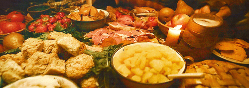

An Introduction To Hobbit Breakfast
In the Shire, hobbits cherish a rich morning culinary tradition, centered on breakfast,
second breakfast, and elevenses. These rituals are celebrations of the new day and opportunities for hearty
fellowship. From comforting breakfasts of freshly baked bread, sausages, and eggs, to lighter second
breakfasts of fruits, cheeses, and pastries, each meal reflects the hobbits' love for good food and
companionship. Elevenses, a mid-morning interlude, features sweet treats and savory delights paired with tea
or ale. Together, these rituals foster a deep sense of community and joy in hobbit society.
First Breakfast: Stuffed Poached Pears
Second Breakfast: Mushroom, Beef & Onion Hand Pies
Elevenses: Shire Seed Cake